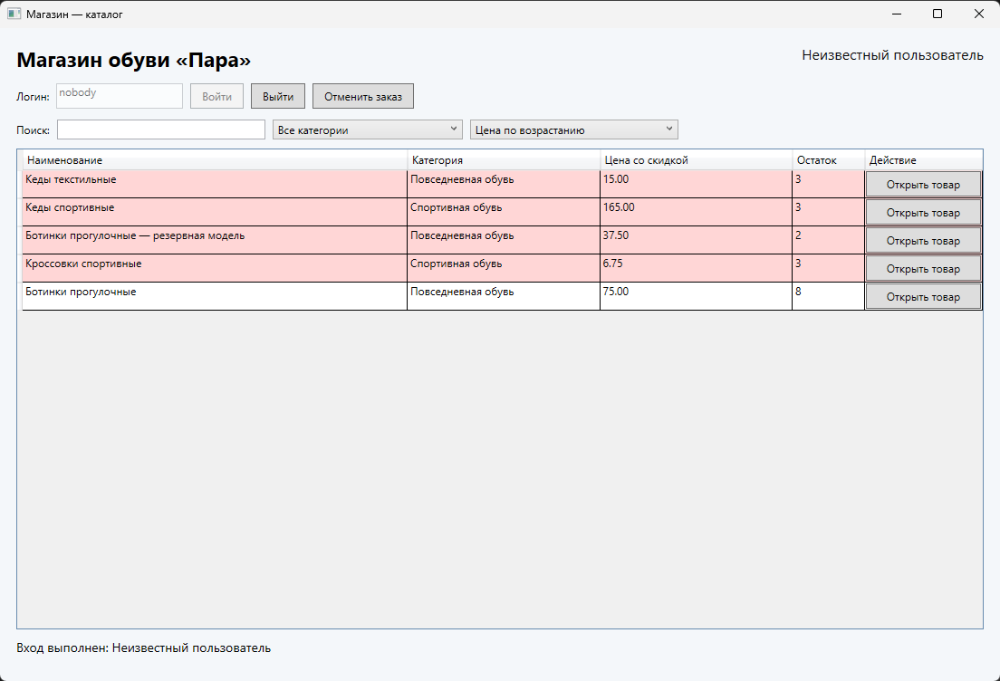
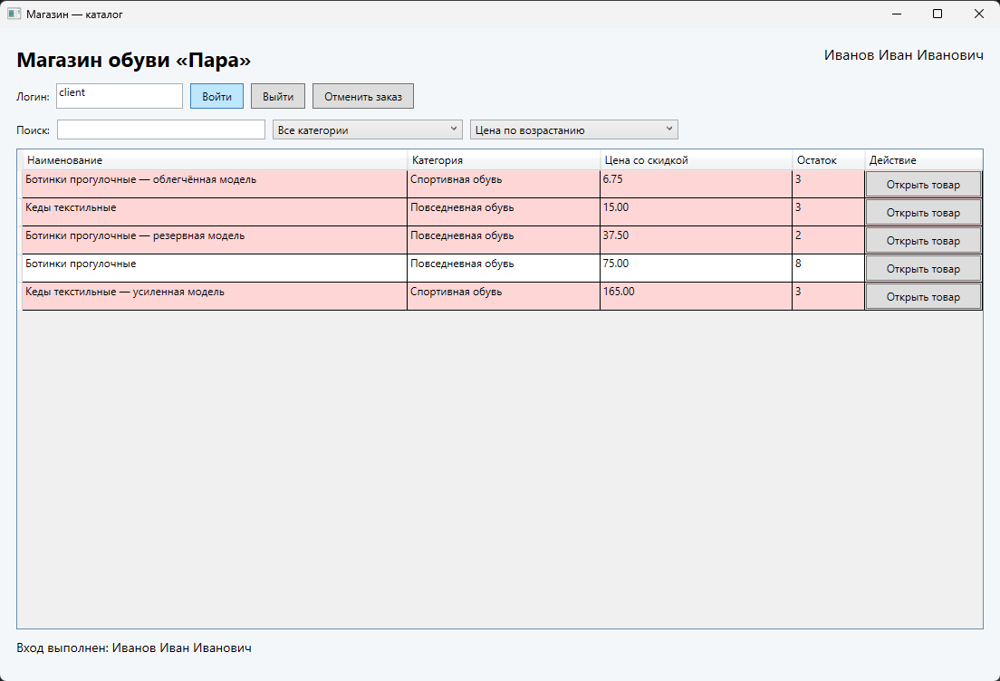
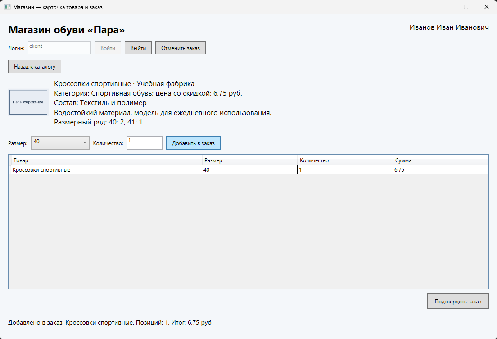
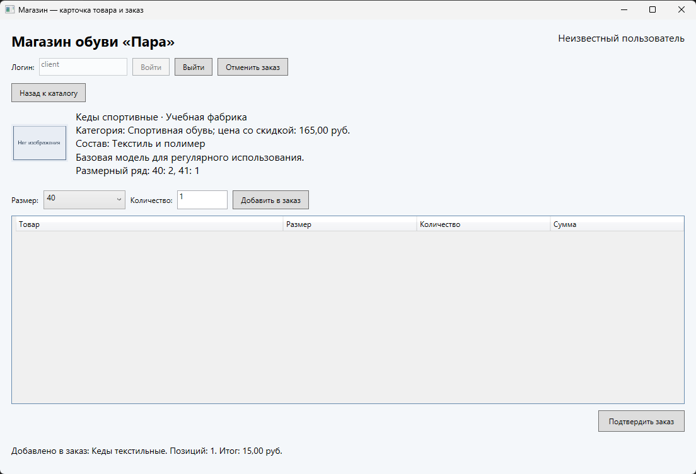
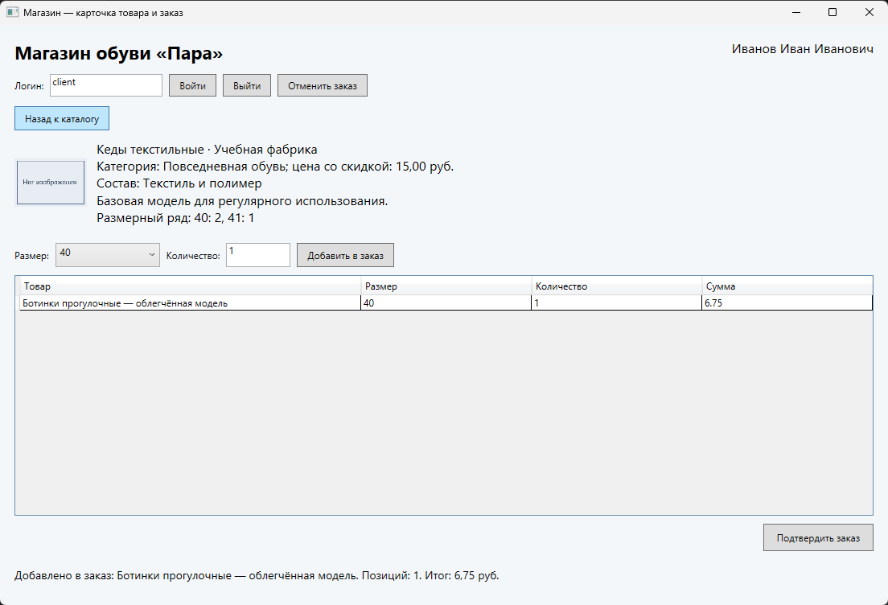
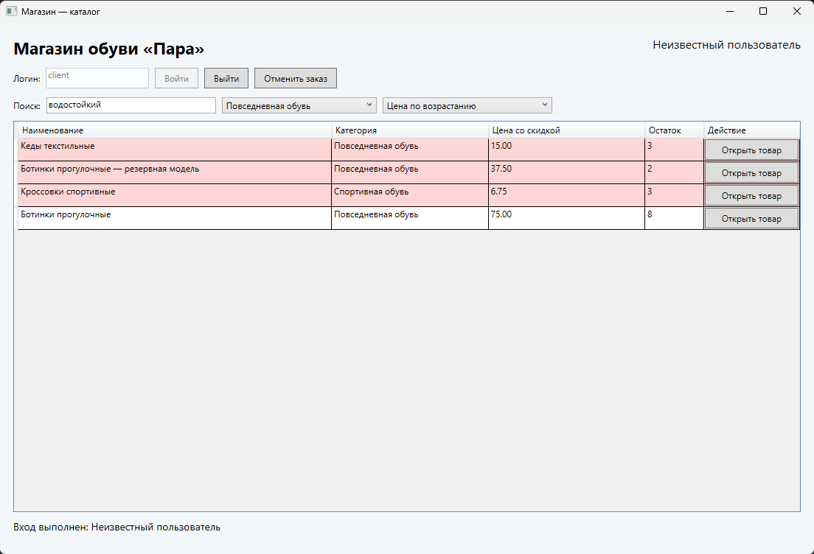
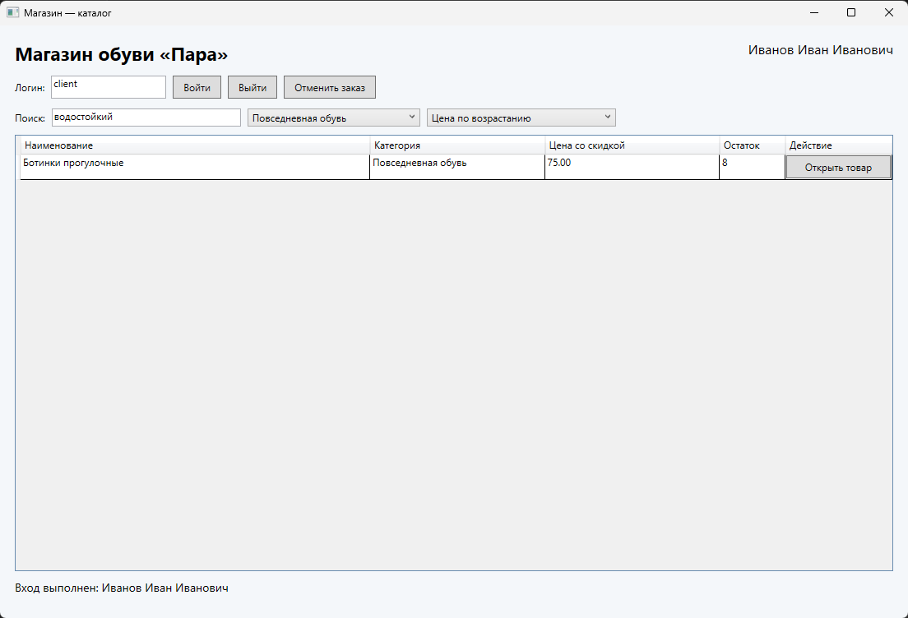
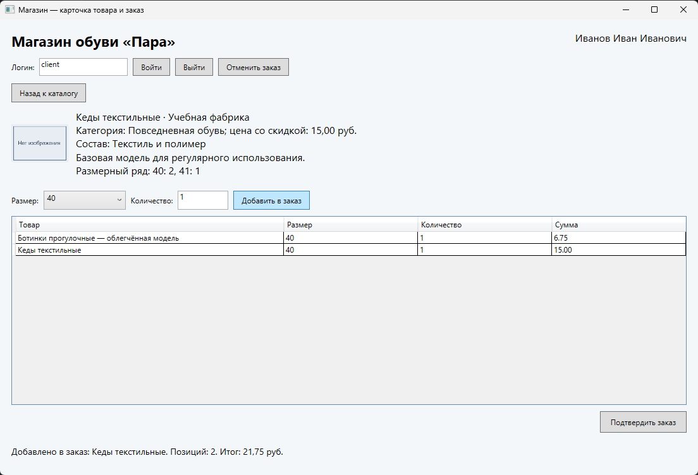
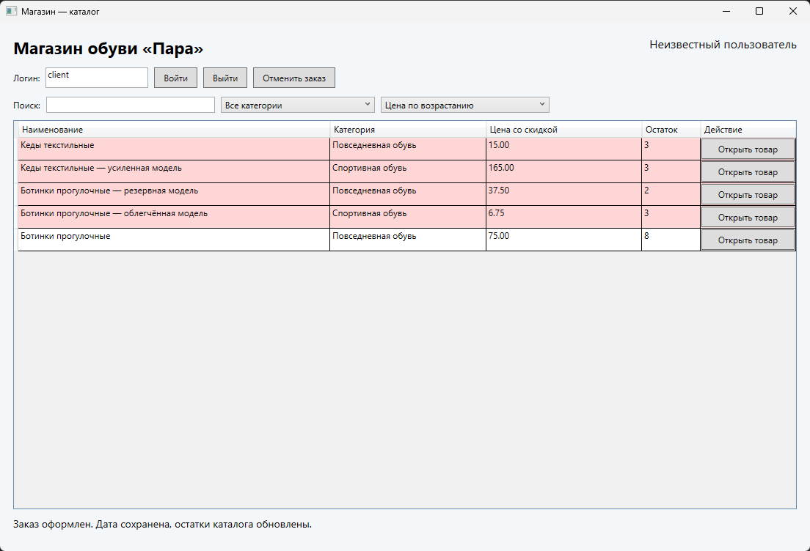
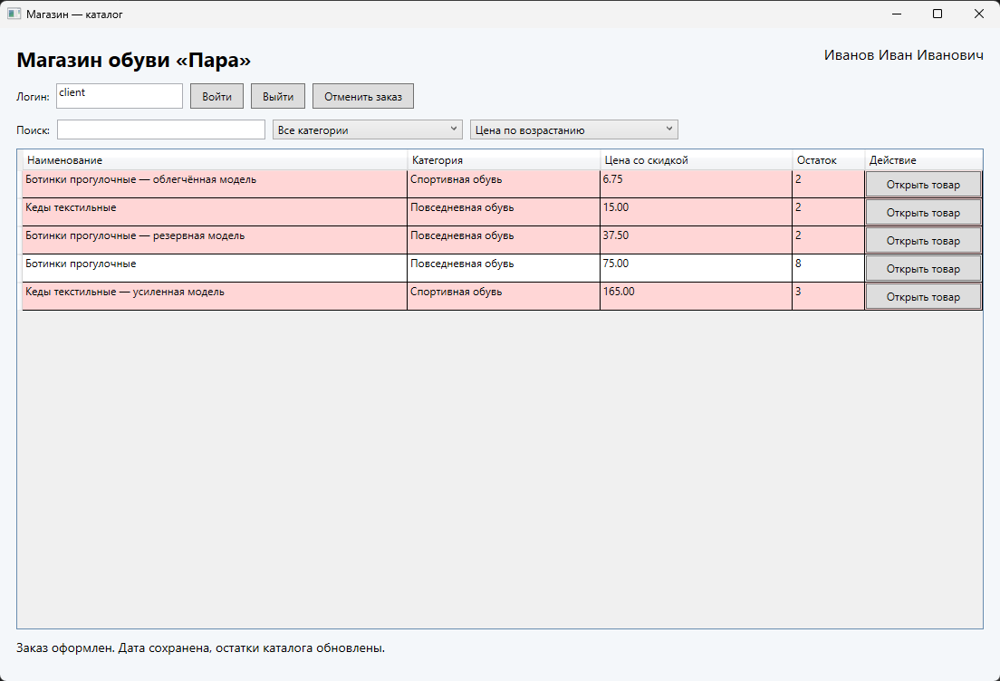

Магазин обуви «Пара»
Отдельная демонстрационная область: сопровождение каталога и оформления заказа.
Учебный маршрут / 2026-2027
4 курс · 7 семестр · сопровождение готового приложения C# WPF
Учебный комплектОтдельная демонстрационная область: сопровождение каталога и оформления заказа.
Скачать исходное приложение магазина с дефектами для диагностики
Начните с этого проекта; сначала воспроизведите симптомы на демонстрационных данных.
Сначала необходимо отличить ошибку среды от дефекта поведения. Скачать исходное приложение магазина с дефектами для диагностики: https://olgakraven.github.io/2026-2027-09.02.07-prog-up-pm.04-sem07/downloads/Shop-source.zip. Сохраните неизменяемую копию архива, распакуйте другую копию в отдельный каталог. Откройте Visual Studio: «Открыть проект или решение» → выберите Shop.csproj. Если среда уже открыта: «Файл» → «Открыть» → «Проект или решение». В «Обозревателе решений» должны появиться App.xaml, Models.cs, RepairLogic.cs, MainWindow.xaml и data.json.
Проект рассчитан на установленный .NET 10 и WPF. В свойствах Shop.csproj указаны TargetFramework net10.0-windows и UseWPF true. Выберите «Сборка» → «Собрать решение», проверьте окно «Вывод» с источником «Сборка». Для запуска без отладчика нажмите Ctrl+F5. Если нет .NET 10 или компонента разработки классических приложений .NET, сообщите преподавателю; не заменяйте код приложения на другую технологию.
В исходной копии data.json содержит магазин обуви, логины client и buyer, пять товаров и пустую историю заказов. JSON — текстовая запись объектов и списков. Приложение читает файл из папки запуска, а успешный заказ изменяет именно эту рабочую копию. Перед повторным экспериментом закройте приложение и восстановите data.json из исходного проекта. У файла в «Свойствах» должно быть «Копировать в выходной каталог: Копировать, если новее». Аналогично настроена picture.png. Не записывайте в исходный архив результаты испытаний.
Исходный проект магазина, намеренные дефекты, исправленный пример и JSON подготовлены специально для этой учебной практики. Сначала работайте с Shop-source.zip, а Shop-fixed-example.zip открывайте для сверки причин и законченных правок.
MainWindow.xaml описывает элементы окна. Атрибут x:Name связывает элемент с полем класса; Click, TextChanged и SelectionChanged называют обработчики MainWindow.xaml.cs. Откройте MainWindow.xaml двойным щелчком; выберите вкладку XAML. У кнопки «Войти» (x:Name="LoginButton", AutomationId для автоматизации имеет то же значение) найдите Click="Login_Click"; нажмите F12 на имени обработчика или откройте MainWindow.xaml.cs через стрелку рядом с окном. В Login_Click вызывается RepairLogic.Authenticate. Аналогично Back_Click, RefreshCatalog, Add_Click и Confirm_Click вызывают методы сопровождения. Models.cs описывает пользователя, товар, позицию заказа и сохранённый заказ.
Изменяем только RepairLogic.cs. Дизайн окна, чтение и запись данных, изображения и расчёт исходной скидки уже предоставлены. Не удаляйте элементы окна и не редактируйте автоматически создаваемые файлы obj. Корзина cart — список неподтверждённых позиций, не склад. Stock хранит доступное количество отдельно для каждого размера. Orders — подтверждённые заказы с датой. UI показывает снимок коллекции и обновляется после изменения. Блокировка повторного входа уже настроена в исходном окне: после входа LoginBox и LoginButton отключаются. Для другого пользователя нужна команда «Выйти»; отказ от предупреждения сохраняет владельца и корзину.
Запустите исходный проект, запишите названия окон, доступность полей гостю и начальные остатки. Откройте товар: изображение-заглушка, производство, состав, описание и размерный ряд должны отображаться. Низкий суммарный остаток выделяется светло-красным. Эти уже работающие функции должны сохраниться после сопровождения.
В Visual Studio в обозревателе решений откройте data.json двойным щелчком. Subject задаёт название области; Users содержит тестовые логины и ФИО; Products — товары; Orders — историю заказов. У товара Id связывает каталог со строками заказа, Category определяет фильтр, Stock сопоставляет строковое обозначение размера и остаток. Не считайте размер общим для всех товаров. Price хранит условную базовую цену. В MainWindow.xaml.cs найдите RefreshCatalog: он вычисляет DiscountPrice при обновлении каталога. Поэтому начальный DiscountPrice: 0 является ещё не вычисленным значением; в окне показывается рассчитанная цена. ImagePath: "" включает заглушку, находящуюся в picture.png. Эти служебные значения не являются дополнительными дефектами D1–D5.
D1
Введите nobody и нажмите «Войти». Исходная версия показывает неизвестного пользователя и разрешает действия. Ожидание: отказ и отсутствие доступа. Затем введите client: ФИО должно соответствовать записи Users.

Исходный return new User создаёт пользователя независимо от списка. В RepairLogic.cs выделите целиком метод Authenticate, включая его фигурные скобки, и замените приведённым фрагментом. Директива namespace и открывающая скобка класса в первом фрагменте уже существуют: их не дублируйте.
namespace Shop;
public static class RepairLogic
{
// D1: пользователь определяется только по зарегистрированному логину.
public static User? Authenticate(StoreData data, string login)
{
return data.Users.FirstOrDefault(u => u.Login == login.Trim());
}
FirstOrDefault ищет совпадение логина; при отсутствии возвращает null. Trim удаляет случайные пробелы по краям. Пароль не добавляется: его не требует исходное задание. MainWindow.SetAccess использует null для запрета операций, а Login_Click выводит информативное сообщение.
Сохраните Ctrl+S, соберите Ctrl+Shift+B, запустите Ctrl+F5. nobody должен вызвать сообщение «Логин не найден», client — показать Иванов Иван Иванович. Проверьте buyer и пустой логин. Гость может просмотреть товар, но не добавить его в заказ.


D2
Войдите как client, откройте ботинки, добавьте одну пару размера 40 и нажмите «Назад к каталогу». Откройте кеды. В исходной версии ранее добавленная позиция исчезает.

Back_Click вызывает RepairLogic.Back. Исходный cart.Clear удаляет данные при навигации. В RepairLogic.cs замените целиком Back фрагментом ниже. Не меняйте отдельную кнопку «Отменить заказ»: она намеренно очищает корзину после подтверждения.
// D2: переход «Назад» сохраняет неподтверждённый заказ.
public static void Back(List<CartLine> cart)
{
// Очистка выполняется отдельной подтверждаемой командой отмены.
}
Back не меняет cart: переключение окна не означает отказ от покупки. ShowCatalog скрывает карточку, показывает каталог и сохраняет выбранные поиск, категорию и порядок. Отмена и выход имеют отдельное предупреждение.
Добавьте ботинки, вернитесь, откройте кеды: строка ботинок должна оставаться. Добавьте кеды: теперь две позиции. Проверьте повторный возврат. Нажмите «Отменить заказ», сначала «Нет», затем «Да»: только подтверждённая отмена очищает заказ, остатки не меняются.

D3
Войдите, выберите «Повседневная обувь», введите водостойкий. Ожидается только товар этой категории с совпадением в имени или описании. Исходная версия смешивает товары другой категории. При пустом поиске сравните цены: порядок строкового сравнения может отличаться от числового.

В RefreshCatalog передаются текущие значения трёх элементов. В исходном Catalog оператор || соединяет категорию и текст, а ToString превращает цену в строку. Замените метод Catalog целиком.
// D3: поиск и категория сужают один набор; цена сравнивается как число.
public static List<Product> Catalog(StoreData data, string query, string category, bool descending)
{
query = query.Trim();
var filtered = data.Products.Where(p =>
(category == "Все категории" || p.Category == category) &&
(p.Name.Contains(query, StringComparison.OrdinalIgnoreCase) ||
p.Description.Contains(query, StringComparison.OrdinalIgnoreCase)));
return descending ? filtered.OrderByDescending(p => p.DiscountPrice).ThenBy(p => p.Id).ToList()
: filtered.OrderBy(p => p.DiscountPrice).ThenBy(p => p.Id).ToList();
}
Внешний && требует одновременно подходящую категорию и текст. Внутренний || допускает совпадение в имени или описании. Пустая строка входит в любой текст, поэтому отключает только поиск. «Все категории» отключает только категорию. Decimal сравнивается как число; ThenBy по Id делает порядок равных цен стабильным. Изменения происходят через события без дополнительной кнопки.
Сохраните, соберите, запустите. Выберите категорию, введите часть описания, смените порядок на убывание, затем уточните поиск: категория и порядок сохраняются. Проверьте разный регистр, пробелы по краям, отсутствующее слово, пустой поиск и «Все категории». В демонстрации начальные цены: 6,75; 15; 37,50; 75; 165 руб.

D4
Откройте ботинки размера 40 с остатком 5. Добавьте 3, затем ещё 3. Исходная версия принимает обе строки: каждая отдельно меньше остатка, но общий заказ превышает его.
Add_Click передаёт товар, размер, текст количества и существующий cart. Исходное сравнение quantity > stock не учитывает reserved. Замените ValidateQuantity целиком.
// D4: проверяется общий объём уже добавленных позиций одного размера.
public static string ValidateQuantity(Product product, string size, string input, List<CartLine> cart)
{
if (!int.TryParse(input, out var quantity) || quantity <= 0)
return "Количество должно быть положительным целым числом.";
if (!product.Stock.TryGetValue(size, out var stock) || stock <= 0)
return "Выберите размер, доступный для заказа.";
var reserved = cart.Where(x => x.ProductId == product.Id && x.Size == size).Sum(x => (long)x.Quantity);
return quantity + (long)reserved > stock ? "Количество в заказе превышает остаток выбранного размера." : "";
}
TryParse обрабатывает буквы, дробь и слишком большое число без исключения. Проверяется положительное целое, наличие размера и положительный остаток. reserved суммирует только тот же товар и размер. Длинное целое при сложении исключает переполнение int. Возвращается либо пустая строка (успех), либо сообщение о конкретной причине.
Для размера 40 добавление 3+3 должно отклоняться, а 3+2 приниматься. Проверьте 0, -1, abc, 1,5 и очень длинное число. Для размера 41 действует отдельный остаток 3; заказ другого товара не должен уменьшать его доступность. Недоступный размер отсутствует в списке. Остатки до подтверждения не меняются.

D5
На чистых данных добавьте две пары ботинок размера 40 и одну пару кед. Подтвердите. В исходной версии заказ сохраняется, но остатки остаются прежними. Перезапуск повторяет несогласованное состояние.

Confirm_Click создаёт копию данных и вызывает Commit. Исходная строка _ = line.Quantity не уменьшает Stock. Замените метод Commit целиком; закрывающая скобка класса в конце фрагмента уже есть, не добавляйте вторую.
// D5: сначала проверяется весь заказ, затем изменяются все остатки.
public static string Commit(StoreData data, User user, List<CartLine> cart, DateTime date)
{
if (cart.Count == 0) return "Добавьте хотя бы одну позицию в заказ.";
if (cart.Any(x => x.Quantity <= 0))
return "Количество каждой позиции должно быть положительным.";
foreach (var group in cart.GroupBy(x => (x.ProductId, x.Size)))
{
var matches = data.Products.Where(p => p.Id == group.Key.ProductId).ToList();
if (matches.Count != 1) return "Товар отсутствует или его идентификатор не уникален. Проверьте данные заказа.";
var product = matches[0];
if (!product.Stock.TryGetValue(group.Key.Size, out var stock) || group.Sum(x => (long)x.Quantity) > stock)
return "Остатки изменились. Уменьшите количество или отмените заказ.";
}
var lines = cart.Select(x => new CartLine { ProductId = x.ProductId, Name = x.Name,
Size = x.Size, Quantity = x.Quantity, Price = x.Price }).ToList();
foreach (var line in lines)
data.Products.Single(p => p.Id == line.ProductId).Stock[line.Size] -= line.Quantity;
data.Orders.Add(new Order { Login = user.Login, Date = date, Lines = lines });
cart.Clear();
return "";
}
}Сначала проверяется весь заказ: количество каждой строки должно быть положительным, идентификатор товара должен находиться ровно один раз, размер должен существовать, суммарное количество не должно превышать остаток. При ошибке возвращается сообщение до изменения склада. Затем копируются позиции, уменьшается остаток соответствующего размера, добавляется заказ с пользователем и датой, очищается переданная корзина. Окно вызывает метод для копии и сохраняет её во временный файл; только успешная замена файла делает данные текущими. Ошибка записи оставляет рабочую корзину для повторной попытки. Такая повторная проверка защищает Commit и при прямом вызове из кода. Удалённый товар, повторяющийся Id, нулевое или отрицательное количество дают отказ; это дополняет проверку ввода в Add_Click.
На чистой демонстрации размер 40 ботинок: 5 → 3, размер 41: остаётся 3; выбранный размер кед: 2 → 1. После сообщения откройте товары, закройте и снова запустите приложение, проверьте те же остатки. В data.json в папке bin/Debug/net10.0-windows найдите новый Orders с Login, Date и Lines. Проверьте отмену, пустой заказ и недоступный размер: они не создают заказ. Для проверки защиты метода на копии проекта поставьте точку останова перед Commit. В окне «Контрольные значения» убедитесь в ProductId и Quantity всех позиций. Не исправляйте данные для обхода отказа; верните корректные исходные значения и повторите штатный сценарий.

Закройте приложение. Восстановите начальные данные отдельно для исходной и исправленной копий. Для каждого D1–D5 повторите одинаковые действия. В отчёте записывайте фактический результат и источник снимка, а не только «работает». При непрохождении проверки вернитесь к соответствующему методу; не меняйте исходные данные для сокрытия симптома.
Гость просматривает каталог и карточку, получает отказ при добавлении. client входит; выполняет совместный отбор, меняет направление цены; добавляет товар и возвращается; добавляет другой размер и другой товар; отменяет с «Нет» (заказ остаётся), затем с «Да» (данные остаются). Новый заказ подтверждается, дата и позиции сохраняются, остатки уменьшаются именно по выбранным размерам. После перезапуска повторно проверяются данные, поиск и вход другого пользователя. После входа убедитесь, что поля логина и кнопка «Войти» недоступны. При отказе от выхода заказ и ФИО сохраняются; при согласии корзина очищается до входа другого пользователя.
Правило скидки уже предоставлено: отсутствие заказа в предыдущем календарном месяце даёт 25%. Не изменяйте эту функцию при устранении D1–D5. Сопоставляйте числовую сортировку с DiscountPrice, а не с базовой Price. Проверьте товар без изображения: picture.png отображается в карточке. Низкий суммарный остаток продолжает выделяться. Эти проверки подтверждают сохранность уже работавших компонентов.
Скачать исправленный пример магазина обуви для сверки после диагностики
Используйте после собственного анализа; это демонстрационный пример, а не решение индивидуального варианта.
Скачайте JSON непосредственно из своей карточки. Закройте приложение, сделайте резервную копию data.json, замените его скачанным файлом с именем data.json в корне проекта, затем в Visual Studio «Сборка» → «Перестроить решение». При запуске заголовок и товары должны соответствовать области. JSON хранит строки размеров: M, 40, 30 л или 140×180 не требуют преобразования в число. Сохраните структуру полей, уникальные Id и согласованные ссылки ProductId. Общая логика сопровождения остаётся прежней. В Windows Explorer включите «Вид» → «Показать» → «Расширения имён файлов», чтобы не получить data.json.json. Замените файл в корне проекта, а не только в bin. После перестроения сравните заголовок, Id, категории и размеры всех пяти товаров с разделом «Товары и обозначения размеров» своей карточки. Если старый каталог остался, проверьте путь открытого Shop.csproj и запущенного приложения. Для повторной исходной проверки остановите приложение, верните чистую копию JSON в корень и снова перестройте проект.
Примените разобранные изменения в своей рабочей копии. Затем выполните самостоятельную проверку именно своей области: её условия определяют конкретные товары, граничные данные и ожидания. Перед каждым экспериментом рассчитайте Id найденных товаров, количества по размерам, сумму и владельца заказа; после запуска сопоставьте результат. При необходимости создавайте только рабочую копию исходных данных, сохраняя опубликованный JSON. Не подменяйте область демонстрационными данными.
Скачать исправленный пример магазина обуви для сверки после самостоятельной диагностики: https://olgakraven.github.io/2026-2027-09.02.07-prog-up-pm.04-sem07/downloads/Shop-fixed-example.zip. Сравнивайте методы и причины, а не копируйте весь проект поверх своего варианта. Исправленный пример содержит только демонстрационный магазин обуви. Он нужен для проверки понимания решения.
Для товара своей области сверяйте обозначение с его назначением: стельки имеют обувной размер, сумка может задаваться габаритами, очки — универсальной посадкой, чехол планшета — диагональю устройства. Сохраните данные исходного файла как контрольную копию. Для каждого эксперимента запишите выбранные Id, размер, начальный остаток и ожидаемое изменение. При совпадающих названиях или размерах товары остаются разными по Id; это нужно проверять отдельно от фильтрации.
Объясните, как запустить приложение из рабочей папки, войти по зарегистрированному логину, найти товар, выбрать размер и количество, вернуться к каталогу, отменить и подтвердить заказ. Укажите, что неподтверждённая корзина не сохраняется при закрытии программы и не уменьшает склад; заказ считается оформленным только после сообщения об успешном сохранении. Поясните действия при неизвестном логине, недопустимом количестве и ошибке записи.
Для каждого обращения свяжите симптом с методом, правкой и подтверждающей проверкой. Укажите проверенную версию среды и приложения, предметную область, исходные условия и ограничения. Сохраните начальные данные отдельно от рабочей копии с заказами. При сдаче проекта приложите ссылку на его репозиторий.
Объясните, какие причины обнаружены, почему изменения их устраняют и какие соседние функции сохранились. Подкрепляйте вывод собственными проверками; не утверждайте, что все ситуации покрыты одним успешным заказом.